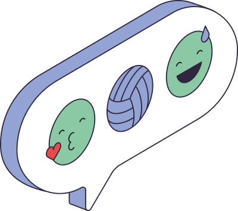

InteliPrompts from the Model
What you will be able to do by the end of the day
Where we are in the journey
Each part of the Day 1 spec becomes a part of the prompt
Six parts that make the instruction clear and verifiable
The same task, two very different results
A fixed format turns loose text into data usable in the funnel
| Criterion | Score | Justification |
|---|---|---|
| Clarity | 4 | Explained with objective examples |
| Experience | 3 | A fit, but little time in the role |
| Profile | 5 | Aligned with the job's competencies |
Showing examples makes the scoring more consistent
The examples set the yardstick. Two similar answers start receiving similar scores.
In an agent that evaluates people, this is not optional
A prompt is not born ready — it is adjusted with evidence
One prompt that serves several job roles — and what usually breaks
[role], [criteria], [answer]| Failure | Cause | Fix |
|---|---|---|
| Invents experience | Prompt allows "filling in the gaps" | Ask it to cite only what is in the answer |
| Inconsistent score | No criteria or examples | Add criteria and calibration (few-shot) |
| Signs of bias | No attribute constraint | Explicitly forbid age/gender/origin |
| Broken format | Format not specified | Require JSON/table and give an example |
Group sprint · 30-min timer · write, test and adjust
Answer "yes" to everything before considering the prompt ready
Where we got to and what comes next
Record the final prompt and the 3 test cases used. During the technical visit, confirm whether the spec's evaluation criteria match the partner's real process — and adjust if necessary.